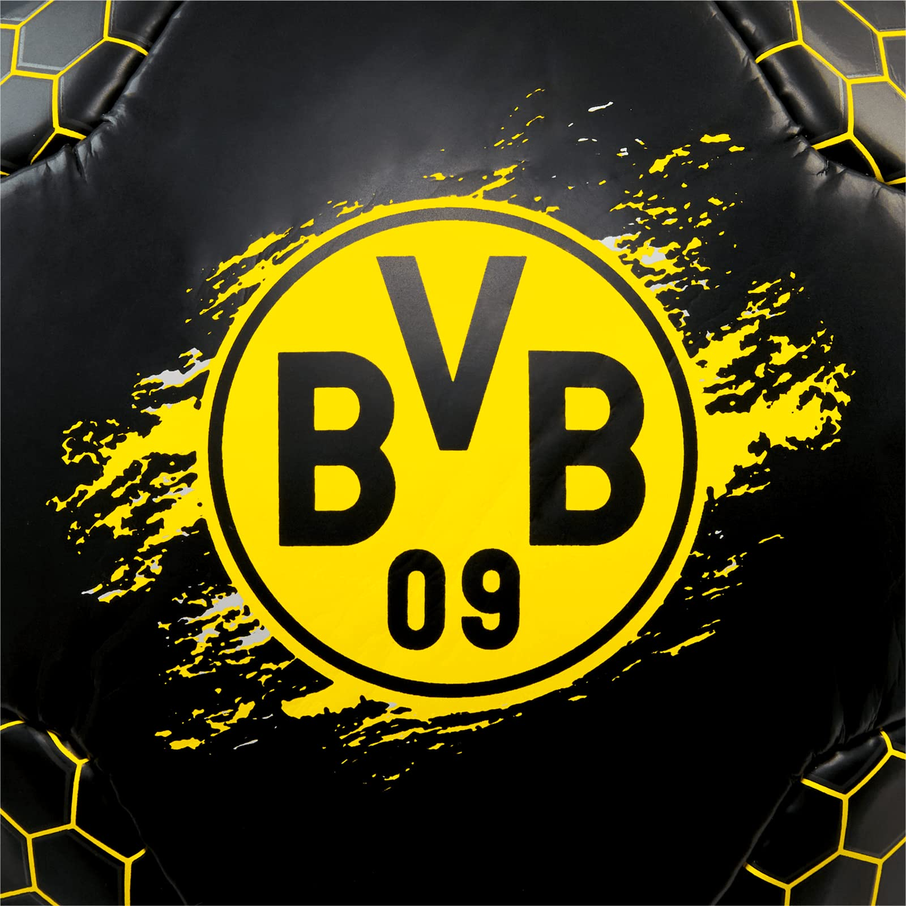

Borrusia Dortmund Borussia Dortmund, założona w 1909 roku, to jeden z najbardziej znanych klubów piłkarskich w Niemczech i Europie. Klub powstał z inicjatywy grupy młodych entuzjastów piłki nożnej w Dortmundzie, a jego historia pełna jest sukcesów i dramatycznych momentów. W pierwszych dekadach istnienia, Borussia zdobyła swoje pierwsze trofea, w tym mistrzostwo Niemiec w 1956 roku. Jednak prawdziwy rozkwit klubu nastąpił w latach 90., kiedy to pod wodzą trenera Ottmara Hitzfelda Borussia zdobyła dwukrotnie tytuł mistrza Niemiec oraz w 1997 roku triumfowała w Lidze Mistrzów, pokonując Juventusa w finale. W ostatnich latach, pod kierownictwem trenera Jürgena Kloppa, klub zyskał nowe oblicze, a jego gra przyciągnęła uwagę wielu kibiców. Klopp wprowadził ofensywny styl, który przyniósł kolejne sukcesy, w tym tytuł mistrza Bundesligi w 2011 i 2012 roku oraz Puchar Niemiec. Borussia Dortmund to także znana z pasjonujących kibiców, szczególnie na stadionie Signna Iduna Park, który może pomieścić ponad 81 tysięcy widzów. Kultura kibicowska, znana z głośnych i kolorowych dopingu, czyni to miejsce jednym z najciekawszych w Europie. Dzięki silnym podstawom, młodym talentom i niesłabnącej pasji, Borussia Dortmund kontynuuje swoją historię jako jeden z czołowych klubów na świecie. 